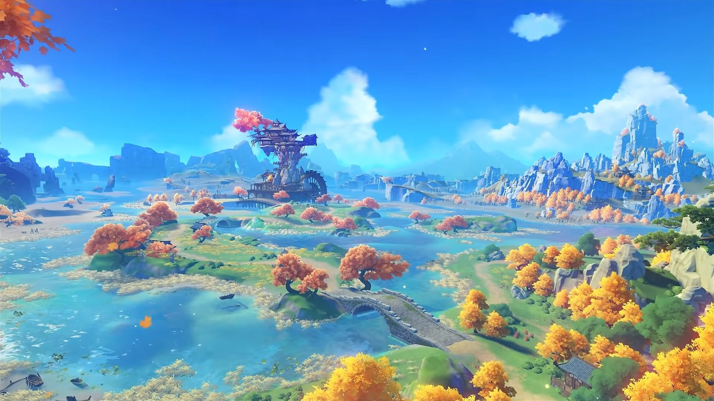
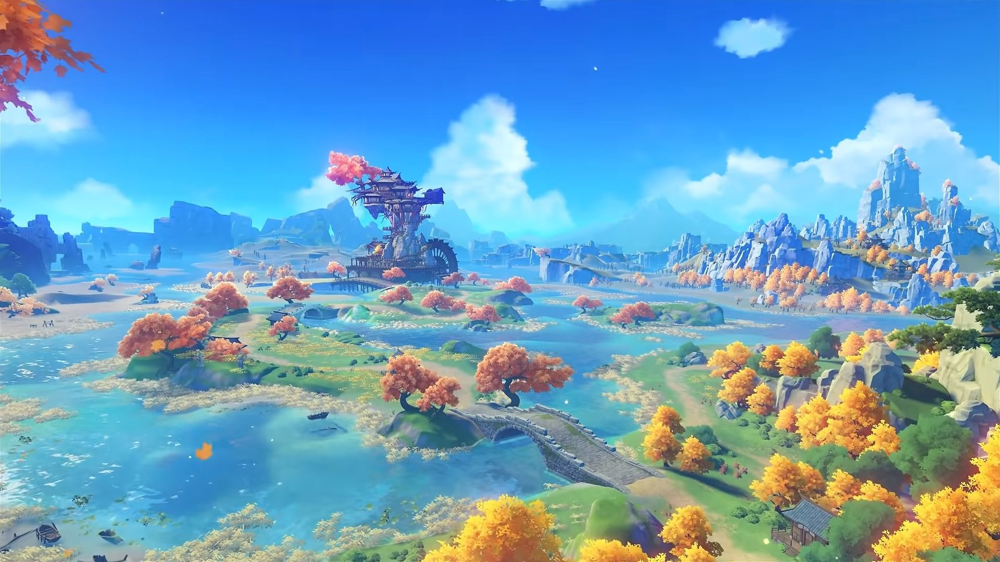
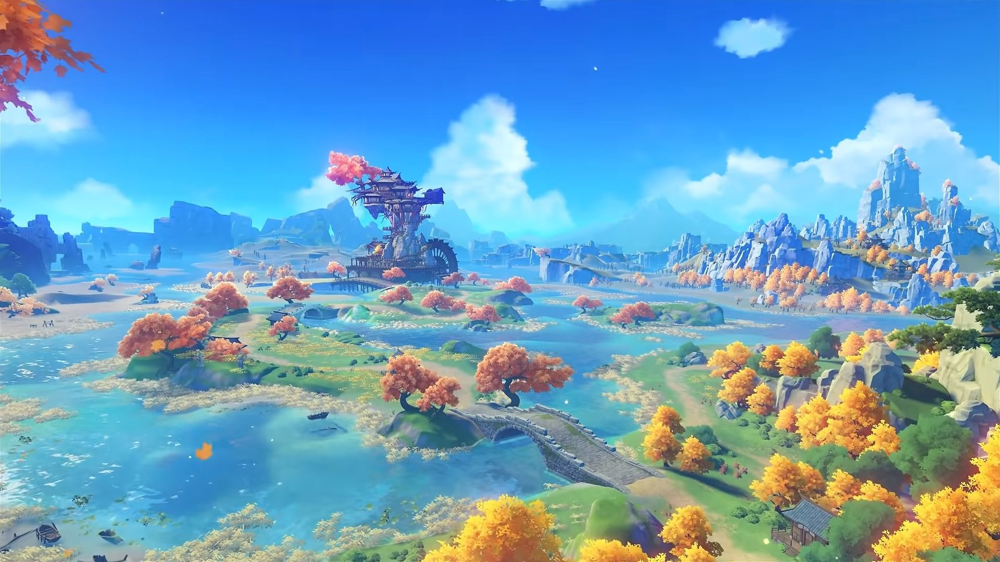

Journey through a world filled with hidden treasures, unique monsters
and beautiful scenery. All over the map there are treasures to be found,
actual treasure chests! Some right out in the open, others you'll have
to look harder and even complete puzzles. Want to battle monsters and
bosses? Wander from beaches all the way to mountain tops, there is no
shortage of monsters in this world! Go through quests, character stories
and hangouts as well.

So Many Characters! And This isn't even all of them!
My Favorite Characters so far!
1 / 5
Arataki Itto
5 star
Vision: Geo
Weapon: Claymore
Leader of the Arataki Gang!
2 / 5
Razor
4 star
Vision: Electro
Weapon: Claymore
Raised by Wolves!
How do you get these characters? You WISH for them, that's how!
The Wish System
When wishing for characters you'll need Primogems. Yes, Genshin Impact
is a Gacha game and you can buy them. BUT... there are alternative ways
to earn Primogems. Genshin gives out Primogems and other in game items
for particpating in events, doing daily commisions, quests and story
quests. We like to call these "Freemogems!". Each character will be on
their own banner with three 4 star characters. You pick the banner you
want to pull on and wish away! There is a 50/50 chance that you get the
5 star character you are pulling on or a different 5 star character. If
you loose your 50/50, your next 5 star is guaranteed to be the character
you pull on. There is pity built into this sytem, hard pity is 90 wishes
so you are guaranteed a 5 star at 90 wishes (there is mention of soft
pity which starts around 74 wishes). You can wish one wish at a time or
make 10 pulls at a time. Every 10th wish you will get a 4 star character
or weapon. Keep in mind some people are lucky and get a 5 star early or
even multiple 4 or 5 stars in a 10 pull. Take a look at the video below
of my favorite Genshin streamer, Enviosity pulling on Zhongli and Ganyu
banners. Envi is a free to play Genshin Impact player! He's been
stocking up on Primogems for a while.
 
